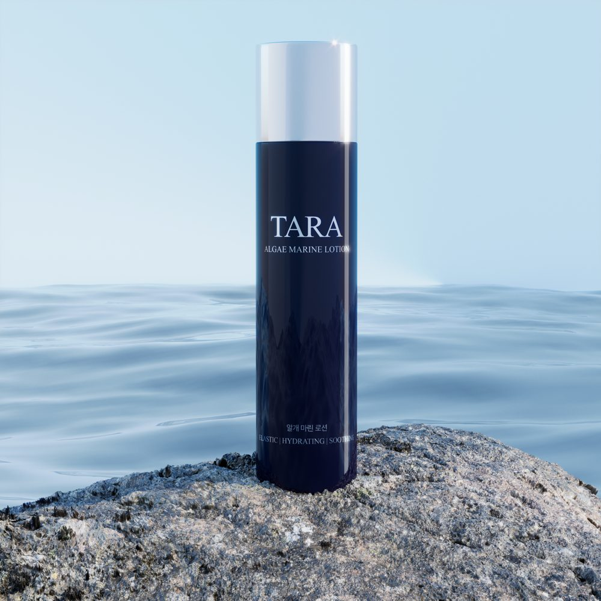

Guide
Korean skincare routine for dry skin: the simple 3-step version

A Korean skincare routine for dry skin doesn't need ten steps. This simple 3-step version is toner, lotion and cream, applied to clean skin from thinnest to thickest. Each layer adds moisture or helps hold it in, so skin looks smoother and more comfortable.
Before you start: cleanse gently
Begin with a clean face. Use a gentle cleanser and lukewarm water, then pat with a towel. If your face feels tight and squeaky after washing, your cleanser may be too strong for you. Move on to toner soon after, before your skin feels dry again.
Step 1: Hydrating toner
In Korean skincare, toner is the first layer of hydration. Pour a little into your palms and press it over your face and neck. A cotton pad works too, but sweep lightly. If your skin still feels dry, press in a second thin layer.
Our Algae Marine Toner is a concentrated ampoule toner made with Icelandic glacial water, sea algae, niacinamide and Centella Asiatica.
Step 2: Lotion
A Korean lotion, also called an emulsion, is lighter than a cream. It goes on after toner and helps seal in that first layer. Use a small amount and press it in evenly.
The Algae Marine Lotion is a lightweight emulsion with sea algae, niacinamide, squalane and trehalose. Squalane and trehalose hold moisture in place and soften the look of fine lines.
Step 3: Cream
Cream is the richer final layer. Warm a small amount between your fingertips, then press it over your face and neck, keeping clear of the eye area.
Our Caviar Power Cream is a rich cream with caviar oil fermented for 150 hours, Hawaiian deep sea water and finely milled diamond powder.
Morning and night
- Morning: toner, lotion, then a thin layer of cream if you want it. Finish with sunscreen.
- Night: cleanse, then toner, lotion and cream. If your skin feels dry, this is the time to be a little more generous with the cream.
Small habits that help
- Press instead of rubbing, especially where skin feels tight or looks flaky.
- Let each layer settle for a moment before adding the next.
- Adjust with the season. In cold or dry weather you may want more cream. On humid days, toner and lotion may feel like enough in the morning.
- Add one new product at a time, so you can tell how your skin responds to it.
Do you need more than three steps?
Not to get started. Once the basics feel easy, you can add extras such as an ampoule or a sheet mask. The full TARA routine shows where each one fits. If dryness comes with discomfort that doesn't go away, ask a doctor about it.
TARA has been featured in Vogue Korea, Allure Korea and Cosmopolitan Korea.